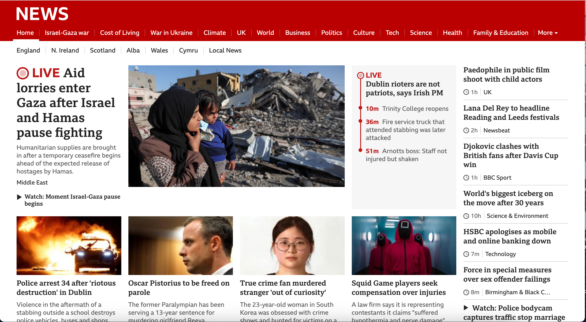
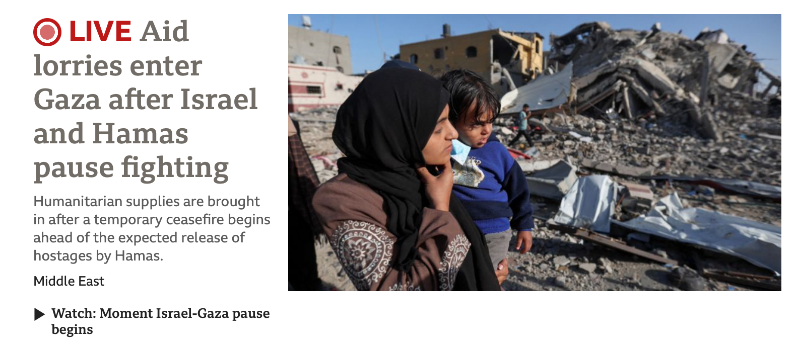
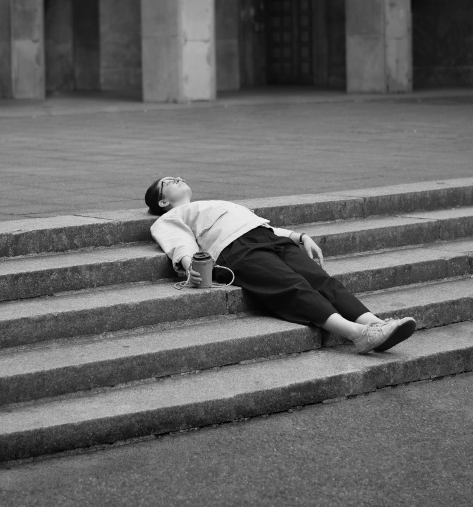
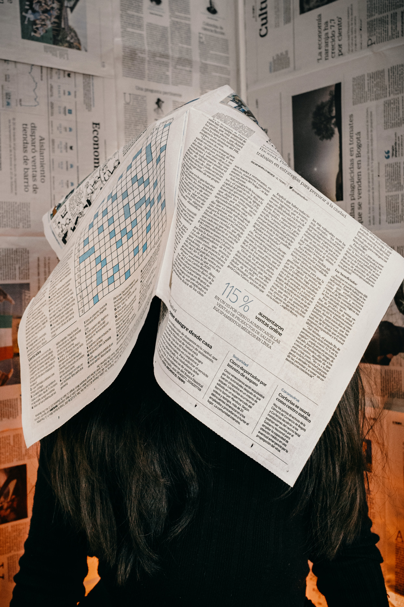

Fake News and the Real Life Consequences
I want to create a website about the impact of Fake News and its real-life consequences. Essentially, I envision a website organized into sections, like the format of the 7 Deadly Sins website we discussed in Week 3. I want my website to consist of extensive information with regards to the most notorious fake news stories out there, as well as tips on how to spot fake news.
Week 7 IL Activity:
Task 1: The stages of the creative process
Preparation Stage:During the preparation phase of my project, the first obvious influence for me was the subject of Digital Media & Information Studies. Throughout my time engaging with DMAIS, I have been exposed to many subjects such as Digital Humanities, ICT, AI, Digital Creativity and so on. Each of these widened my general knowledge of how humans interact with the internet and why. I have always been a deep thinker and enjoy analysing things beyond the surface level, specifically questioning the status quo and understanding why people act in the ways that they do. With this exposure and mindset, I gained inspiration from a subject I took in my first year, where we explored fake news in light detail. The sensationalism of fake news and its capacity to spread like wildfire intrigued me the most. What also intrigued me is the manner in which it targets people’s emotions and insights strong reactions. This is what makes fake news so dangerous but also so interesting to study. On a daily basis, I witness people interacting with and sharing fake news. Whether it be a forwarded Whatsapp message or a shared Instagram post, it just shocks me that people can own a piece of technology yet have no awareness of how to use it in a responsible and informed manner. It is also no secret that teens and students are very active on social platforms, but they might be more vulnerable to believing false information online at this age. They also might not be fully aware of the dangers of spreading fake news, and in the hopes of staying relevant or interesting, seek out sensationalism and believe it to be true. This tied in with the empathising stage of design thinking and defining my users’ needs and problems. This is because I researched my user’s needs and tried to relate to my inner experiences as I too fall under the target audience.
Incubation stage:
I have spent a lot of time in the incubation stage in the last few weeks. As I worked on each week’s IL and Lab Task, I would edit certain parts of my website or concept. For instance, initially, I knew that I wanted my website to be about fake news, but wasn’t sure how I would structure this. I would reflect on it often and finally decided I wanted a format where the user would have access to the original news article, and I would write short snippets of text analysing it purely from a fake news identification perspective. I also was unsure about who my audience would be as fake news affects people globally, no matter who they are. However, after reflection, I wanted it to be geared towards a group that is heavy social media users, which led to me deciding that my target audience would be students. This formed part of the challenging assumptions and thinking about ideas phase of design thinking.
Ideation Stage:
The ideation stage for me was further down the line, and once I had completed my text samples, I knew exactly how I wanted the content to be displayed on my website. The layout and styling ideation happened after I had tried and tested various colours and design schemes and decided to keep it clear and easy to navigate. This formed part of the starting to create solutions part of the design thinking process.
Evaluation Stage:
Upon evaluation, I decided that my idea was worth pursuing as there is a lot of content that I can use to inform my arguments. Fake news affects many people and is a big dilemma in our digital age. I don’t believe education on this matter has been overdone, especially not for students in the prime of their social media use. At this point, I don’t think there are any necessary changes as I have voiced my idea to colleagues and my lecturer, and no concerns have been raised. The class tutor gave me some helpful advice on structuring my content, and he seemed very positive about this website. My colleagues have said this idea seems interesting and is a great topic to explore. This formed part of the testing solutions part of the design thinking process.
Implementation Stage:
The implementation phase is where I am now, but not to the full extent as I have not built the main website I am planning, as that only happens in Semester 2. However, the current website I’m building is leading up to the main event and my navigation and colour scheme will remain very similar to the final version.
Task 2: Analyse the use of images on the web
  The images featured on the BBC News website serve purposes primarily to improve understanding and attractiveness of information. They are not typically used for propaganda or clickbait as BBC News upholds standards that prioritise unbiased reporting. The selection of images is done to align with the messages of the website complementing and reinforcing the news stories. This use of visuals is intended to assist readers in comprehending and remembering the information presented. In terms of image types, BBC News predominantly utilises raster images. These are pixel-based images, such as photographs that play a role in news reporting by capturing real-life events, people and locations. Raster images offer versatility for usage as they can be resized and compressed for loading while maintaining a reasonable level of detail. Occasionally, vector images may appear on the website well; these illustrations, which are composed of paths rather than pixels, are commonly used for infographics or decorative elements like logos or design features. However, their usage is less frequent in news articles. By incorporating both types of images on their platform BBC News ensures an informative user experience that effectively delivers news content in an understandable manner.
Week 7 Lab Activity: Editing Digital Images
Original Version of an image:

Edited version of an image: Grey-scale, with a width of 800px and resolution of 72 pixels. This image was cropped.

Quality Assessment Rating: 3
Original Version of an image:

Edited version of an image: Indexed, with a width of 800px and resolution of 72 pixels. This image was cropped.
Quality Assessment Rating: 4
Original Version of an image:

Edited version of an image: RGB, with a width of 5231px and resolution of 45 pixels. This image had a low resolution and large width.
Quality Assessment Rating: 2
Original Version of an image:

Edited version of an image: Indexed, with a width of 400px and resolution of 95 pixels. This image had a high resolution and a smaller width.
Quality Assessment Rating: 5
Reflective paragraph:
There were two main benefits of optimisation that I recognised in GIMP. The first was the ability to edit and enhance images, improving aspects like colour balance and contrast to make visuals more striking. The second is GIMP's resizing and compression features which help reduce file sizes in order to ensure faster webpage loading times.
Unfortunately, when using GIMP to edit my images, it seemed to make my image outputs more blurry than the image inputs. I got my images from Unsplash, a website offering a vast collection of high-quality, royalty-free images contributed by photographers worldwide. Due to this, the images were already professional-looking photos that needed no further editing. I did enjoy seeing how GIMP can transform the colour of a photo, but that won’t be needed for my website as I would rather find photos that have the colour gradient I desire. The cropping function won’t be needed either, and changing the resolution of images just made them appear blurry. I would rather style my images through CSS and HTML if I want to make any changes.